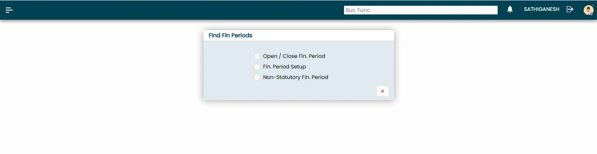
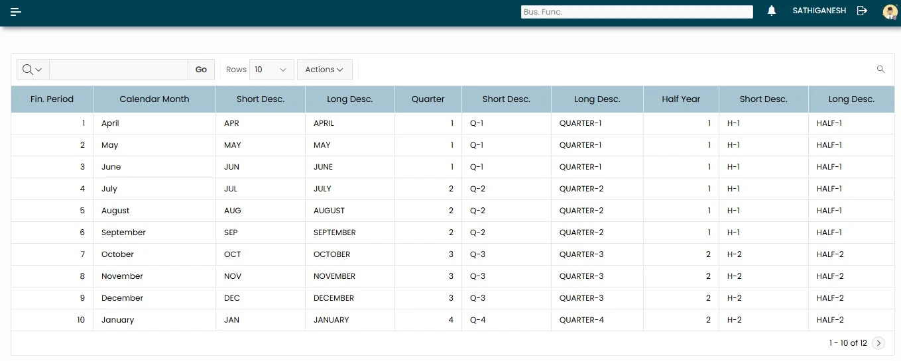
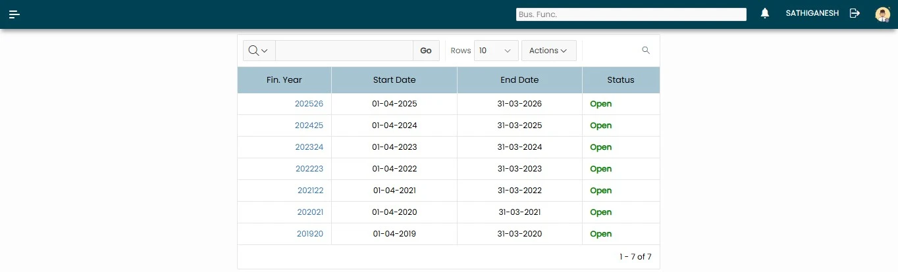
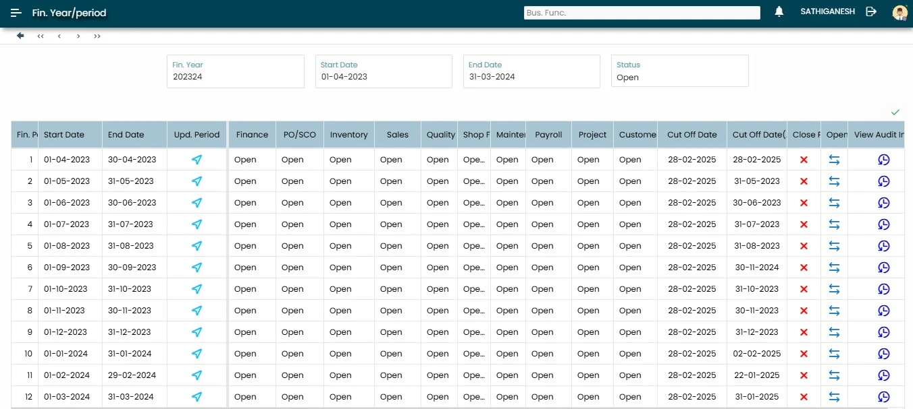
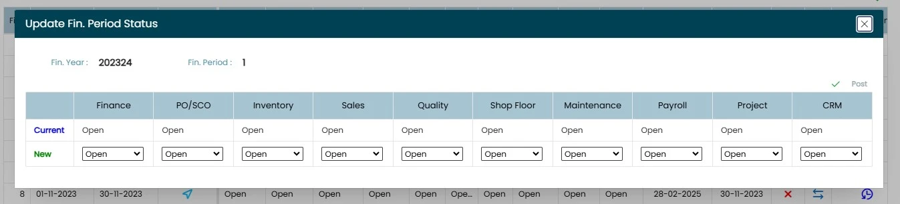
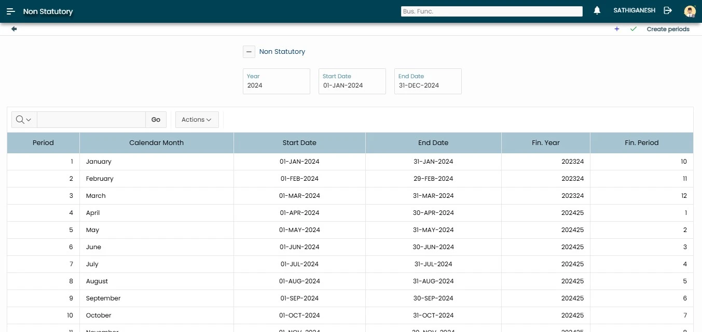

<div data-category="Financials" data-title="Financial Periods" data-updated="December 01, 2025" data-contributors="RoadmapIT" data-breadcrumb="Home,Financials,Financial Periods">
  <div class="page-content">
    <h2>FIN Period setup:</h2>
    <p>This screen is used to define financial periods. Financial periods are intervals of time that are used for accounting and reporting purposes. They can be monthly, quarterly, yearly, or any other duration that suits the business needs. Financial periods help the business to measure and compare its performance, plan its budget, and comply with the tax and legal requirements.</p>
    <h5>Navigation path:</h5>
    <p class="fs-6">Financials\setup \Fin. Year/ Periods \Fin. Periods</p>
    
    <p>Open/Close Fin.Period – Click this button to start,update or to close the Financial Period.</p>
    <p>Fin.Period Setup – Click this button to show the Financial Periods Description details.</p>
    <p>Non-Statutory Fin.Period – Click this button to configure the non-statutory financial period.</p>
    <h2>Fin.Periods Setup</h2>
    <p>This Screen show the Financial Periods Description details.</p>
    
    <ul style="list-style-type: none; align-content: center">
      <li class="mouse-icon">To display a monthly description as period, quarterly and half yearly.</li>
    </ul>
    <h2>Open / Close Fin. Period:</h2>
    <p>This screen is used to define financial periods.</p>
    <h5>Navigation path:</h5>
    <p>Financials\setup \ Fin. Year/ Periods \ fin. period \open close fin. Period.</p>
    <p>This screen is used to change the financial period status.</p>
    
    <ul style="list-style-type: none; align-content: center">
      <li class="mouse-icon">Click on the necessary year to make the changes.</li>
    </ul>
    
    <ul style="list-style-type: none; align-content: center">
      <li class="mouse-icon">Click on update period button on to update the year.</li>
    </ul>
    
    <ul style="list-style-type: none; align-content: center">
      <li class="mouse-icon">User can change the status of the financial period of each module to Not Started, Open or Close.</li>
      <li class="mouse-icon">
        Click the
        <i class="bi bi-check-lg fs-4 mx-2 text-success"></i>
        Button to save the Entry.
      </li>
      <li class="mouse-icon">Click on Post and the document can be forwarded for approval.</li>
    </ul>
    <h2>Open / Close Fin. Period:</h2>
    <p>This screen is used to define non.Stat.financial periods.</p>
    
    <ul style="list-style-type: none; align-content: center">
      <li class="mouse-icon">
        Click
        <i class="bi bi-plus fs-4 mx-2 text-primary"></i>
        to add new Non Statutory period.
      </li>
      <li class="mouse-icon">Enter Year, Start date and End date.</li>
      <li class="mouse-icon">
        Click
        <i class="bi bi-check-lg fs-4 mx-2 text-success"></i>
        to save.
      </li>
      <li class="mouse-icon">Click Create periods and the periods will be created.</li>
    </ul>
  </div>
</div>
